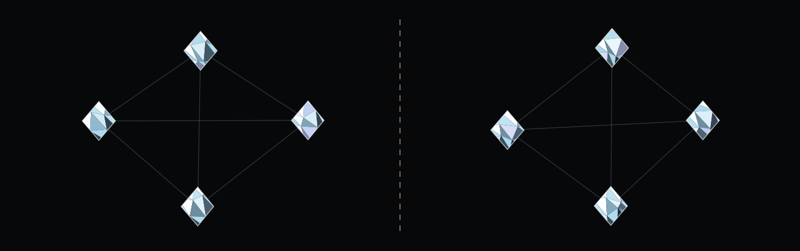

Advocacy, declared.
Putting a client’s position to the people who take a public decision — inside their procedure, on the record, and never under somebody else’s name.
What the practice does
Ordinary work, done in the open. Everything here assumes a registration already exists for the mandate it belongs to.
Declared advocacy
Putting a client's position to the people who take a public decision, inside their own procedure, on the record.
Monitoring
Following the files that affect a client early enough that a position can still be put. Most of the value of this work sits in the calendar, not in the argument.
Evidence and drafting
Submissions, consultation responses, and the material a decision-maker can actually use: what changes, for whom, and what it costs.
Coalitions, named as such
Bringing together parties with a shared interest under their own names. Where several clients stand behind one position, the position says so.
The compliance itself
The registration, the returns that follow it, and the internal record that makes those returns accurate.
What the practice will not do
A lobbying firm is described by its refusals, because every firm advertises the same services. These are not aspirations; a mandate that requires any of them is declined.
- Advocacy that hides who is paying for it, in any form, including material published under somebody else's name.
- Anything of value to a public official, to their family or to their staff. No exception, no threshold, no hospitality that would need explaining afterwards.
- Front organisations. A campaign presented as spontaneous public support while being paid for by a single interest is a deception practised on the decision-maker, whatever the trade calls it.
- Fees contingent on a public decision. What a contingency fee buys is not persuasion.
- Mandates that require the client's identity to be kept out of the register.
- Work on a question where the movement has published a position, unless the overlap is handled by the rule below and handled in public.
The wall between the movement and the practice
The movement publishes positions in its own name. The practice speaks for clients, in theirs. Everything on this site depends on those two things never becoming one.

Two voices, never one
The movement publishes positions in its own name. The practice speaks for clients, in theirs. Nothing is published in both capacities, under one signature, in one document.
No position is for sale
A client cannot commission, edit, delay or veto anything the movement publishes. This is the clause the whole structure exists to make credible, and it is worth nothing unless it is public — which is why it is written here rather than kept in an internal note.
The movement names no client
Movement publications do not name clients of the practice, and client work is never presented as a movement position.
Overlap is declared, not quietly avoided
Where the practice holds a mandate on a question the movement writes about, the overlap is disclosed. Whether the movement then publishes with the disclosure attached, or stays silent, is the founder's decision and is listed as open.
Money does not cross
Whether the movement may receive anything at all from a client of the practice is a question of law before it is a question of policy, and in several countries the law answers it. Open until the country is chosen.
Everything declarable is declared
Every mandate is entered in whichever register applies before the work begins, and the entries are linked from this site rather than left to be found.
Why a movement and a firm cannot simply share a pocket
A movement that publishes political positions and a firm paid to advance its clients’ positions are treated as different things in law in most countries. Held in one pocket, every position the movement publishes is read as bought — and money from a foreign state to a political movement is, in several countries, prohibited outright rather than merely declared.
This site therefore claims no structure at all. It states the rule the structure will have to satisfy, and leaves the legal form where it belongs: open, and listed as open.
Declared before it is done
Putting a client’s position to public decision-makers is a registrable activity in most countries, and doing it for a foreign principal is registrable again under a stricter regime.
Registration of the practice
To be decided
Nowhere, today. No mandate is taken before the registration covering it exists, and this page will carry the entries as links rather than as claims.
Which registers apply
To be decided
It follows from where the practice is set up and from where each client sits. It is a legal question and it goes to counsel admitted there, not to a website.
Whether clients are published here
To be decided
Whether every mandate appears on this page, or only those a register already makes public. No client is named anywhere on this site today.
Questions and answers
Is Equilibrium registered as a lobbyist?
Not yet, and this site does not suggest otherwise. Which registers apply follows from the country where the practice is set up and from where each client sits, and neither has been decided. No mandate is taken before the registration covering it exists.
Is the practice the same body as the movement?
That is an open decision, and it is the first row of the practice group in the table of open questions. The separation described on this page is the rule that holds whichever way it is answered.
Can a client obtain a position from the movement?
No. A client cannot commission, edit, delay or veto anything the movement publishes. Everything else on this page depends on that clause being true, which is why it is published rather than kept internally.
Does the practice act for governments?
Which entities and which states the practice will act for is an open decision, and it is the policy that will decide what the name comes to mean. A website does not answer it.
Does Equilibrium conduct diplomacy?
No. Diplomatic relations between states are conducted by states. The practice advises, prepares, convenes and carries. It holds no accreditation and no official function, and nothing it does binds anyone.
What does an engagement cost?
No figure appears anywhere on this site, because none has been set. How the practice is paid is an open decision, and a fee contingent on a public decision is excluded whatever the answer turns out to be.